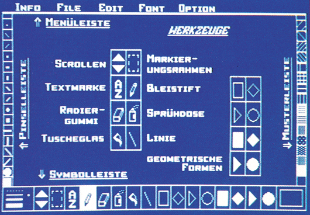
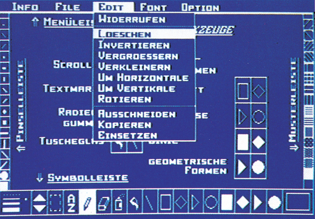
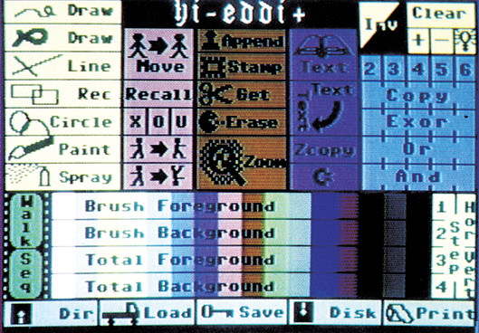
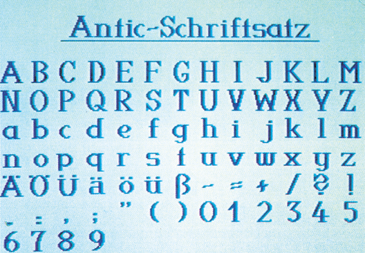

Zeichenprogramme im Vergleich
Grafikprogramme sind noch immer das »Nonplusultra« für den C 64. Das zeigen zwei neue Produkte, die wir für Sie ausführlich getestet haben.
Malprogramme für den C 64 gibt es inzwischen fast wie Sand am Meer. Unsere beiden Testkandidaten unterscheiden sich aber von den meisten Programmen dieses Genres dadurch, daß sie nicht für das Malen bunter Grafiken gedacht sind, sondern eher für ernsthafte Anwendungen wie Entwurfszeichnungen oder zum Beispiel Platinenlayouts. Deshalb verzichteten die Autoren der Programme auf die Farbmöglichkeiten des Multicolor-Modus zugunsten der vollen Auflösung von 320 x 200 Punkten. Ansonsten verfolgen die Testkandidaten aber unterschiedliche Konzepte, die wir im folgenden vorstellen wollen.
Die komfortable Menüsteuerung
Mit dem Profi Painter von Data Becker erhält man ein dünnes Begleitheft, was den Umgang mit Profi Painter nicht gerade erleichtert. Nach dem Start des Programms wird gleich deutlich, daß Data Becker voll auf Menüsteuerung setzt (Bild 1). Es erscheint die Arbeitsfläche zum Zeichnen, umrahmt von allerlei Symbolen, Icons genannt. Diese sind in drei Gruppen unterteilt. Da gibt es die verschiedenen Pinselformen, diverse Zeichenmodi und eine Leiste mit einer Auswahl von Mustern und Schraffuren. Der obere Rand des Bildes wird durch eine Menüleiste begrenzt, auf die wir später noch zu sprechen kommen. Nach dem Start des Programms befindet man sich im Freihandzeichen-Modus. Ein Bleistift als Cursor weist darauf hin. Mit dem Joystick, der übrigens das einzig mögliche Eingabegerät ist, kann jetzt gezeichnet werden. Bei schrägen Linien fallen leider unregelmäßig verteilte Kleckse an den Linien auf, die sich auf dem Bildschirm störend auswirken. Will man mit anderen Pinselstärken arbeiten, so kann man die gewünschte Form in der Pinsel-Menüleiste anwählen. Da viele Formen freihändig etwas unpraktisch zu zeichnen sind, werden in der unteren Symbolleiste einige Formen angeboten: Linien, Rechtecke, Rauten, Kreise und Ellipsen sowie Dreiecke. Diese können sowohl als Rahmen als auch ausgefüllt gezeichnet werden. Um ausgefüllte Formen kann man auch noch eine Umrandung zeichnen, die sich in einem Strichstärkefeld in vier Stufen von gar keinem bis zu einem recht massiven Rahmen verändern läßt. Volle Flächen werden mit vorgegebenen Mustern aus der entsprechenden Menüleiste gefüllt. Zur Verfügung stehen 16 Muster, wie Punktierungen, Schraffuren und Gitter. Außerdem kann sich der Anwender auch einige Formen entwerfen, dazu später mehr.

Die umfangreiche Symbolleiste
Doch zurück zu den Funktionen der Symbolleiste. Ein wichtiges Bedienelement ist das Scroll-Feld. Die gesamte Arbeitsfläche ist nämlich doppelt so groß wie das gerade sichtbare Fenster. Im Scroll-Feld kann man den Ausschnitt nach oben und unten verschieben oder zwischen den beiden Seiten umschalten. Zum Löschen dient ein »Radiergummi«, der aber recht klein ausgefallen ist. Zum Ausfüllen geschlossener Flächen gibt es ein Tuscheglas, das sich über der Zeichnung ausschütten läßt. Dabei wird das gerade aktuelle Muster verwendet. Unregelmäßige Strukturen erzielt man mit der Spraydose. Das Symbol A bis Z steht für das Einfügen von Text in die Grafik. Mit Hilfe eines Markierungsrahmens lassen sich rechteckige Bildschirmausschnitte verschieben oder kopieren. Aber mit den Ausschnitten kann man noch mehr machen. Dazu braucht man die Menüleiste, der wir uns jetzt zuwenden wollen. Fährt man auf eines der Worte INFO, FILE, EDIT, FONT oder OPTION, die am oberen Bildrand zu finden sind, so öffnet sich unter dem angewählten Begriff ein Pull-Down-Menü (Bild 2), das gleich ein wenig Macintosh-Feeling aufkommen läßt. Unter dem Punkt INFO stehen Hilfen zur Tastaturbelegung und zu den Menüleisten zur Verfügung. Diese werden durch Anwählen eines OK-Feldes wieder verlassen. Dabei traten allerdings im Test Probleme auf. Statt der Info-Tafel wurden die Menüleisten gelöscht, ein ärgerlicher Fehler. Das FILE-Menü bietet Möglichkeiten zum Sichern und Laden von Dokumenten sowie Disketten-Befehle. Leider erscheinen dabei oft entweder keine oder nur nichtssagende Fehlermeldungen, wie »Diskettenfehler«. Auch das Ausdrucken der Grafiken wird in diesem Menü angeboten. Der Ausdruck kann auf Diskette gespeichert und im Programm Textomat Plus weiter verarbeitet werden. Unter EDIT erscheint ein umfangreiches Menü, aus dem normalerweise aber nur zwei Funktionen zur Verfügung stehen: »Widerrufen« und »Löschen«. Hat man mal etwas verpatzt, so läßt sich mit »Widerrufen« der letzte Befehl wieder rückgängig machen. Die restlichen Optionen des EDIT-Fensters beziehen sich auf den gerade per Rahmen markierten Ausschnitt. Dieser kann invertiert, rotiert, gespiegelt, verkleinert und vergrößert werden. Leider verschwindet die Markierung sofort, nachdem ein Befehl angewählt wurde. Es ist also zum Beispiel nicht möglich, in einem Arbeitsgang einen Ausschnitt zu invertieren und zu verschieben. Man muß jedesmal neu markieren, was bei pixelgenauem Arbeiten recht mühselig und unsicher ist. Aus dem gleichen Grund ist es nicht möglich, einen Ausschnitt von einer Hälfte des Bildes in die andere zu bringen. Sobald man nämlich auf das Scroll-Feld geht, verschwindet der Markierungsrahmen. Man sollte aber meinen, daß man das Problem auf dem Umweg über Diskette lösen könnte. Denn im EDIT-Menü gibt es drei Funktionen, um Ausschnitte auf Diskette zu schreiben und wieder einzulesen. Doch diese Funktionen sind wenig sinnvoll organisiert. Der Menüpunkt »Einlesen« steht zum Beispiel normalerweise gar nicht zur Verfügung. Man muß erst einen (ansonsten völlig überflüssigen) Ausschnitt markieren, um einen anderen einlesen zu können. Hinzu kommt, daß der Ausschnitt prinzipiell an der gleichen Stelle wieder erscheint, an der er einst stand. Damit kann man wirklich nicht viel anfangen, auch das Problem mit den beiden Bildschirmhälften läßt sich so nicht lösen. Anscheinend ist es wirklich unmöglich, einen Ausschnitt über die Grenzen der sichtbaren Arbeitsfläche zu bewegen.

Das nächste Menü ist mit FONT überschrieben. Vier Zeichensätze werden angeboten, die auch fett, kursiv oder unterstrichen in die Grafik eingesetzt werden können. Das OPTION-Menü bietet schließlich noch einige nützliche Funktionen an. So kann ein unsichtbares Raster über den Bildschirm gelegt werden, mit dessen Hilfe der Cursor leichter positioniert werden kann. Das gesamte Arbeitsblatt kann verkleinert angezeigt werden, eine sinnvolle Einrichtung.
Die »Zoom«-Funktion, die man übrigens auch direkt aus dem Bleistiftmodus aufrufen kann, erlaubt es, das Bild pixelweise zu bearbeiten. Der Punkt »Farbwahl« ermöglicht es, die Rahmen-, Hintergrund- und Zeichenfarbe einzustellen. Der Entwurf von eigenen Schraffuren ist auch möglich. Neben den fest eingestellten Mustern stehen dem Anwender noch einmal 16 Muster zur Verfügung, die er frei gestalten kann. Dazu erscheint ein Fenster, in dem das Muster, stark vergrößert, editiert werden kann. Gleichzeitig sieht man das Muster in Originalgröße. Die selbstentworfene Musterpalette kann man natürlich auch speichern, wie auch einen selbstentworfenen Zeichensatz, der in einem ähnlichen Fenster gestaltet wird.
Umständliche Druckeranpassung
Wenn man von den mangelhaften Ausschnitt-Funktionen und gelegentlich auftretenden Fehlfunktionen absieht, dann kann man mit Profi Painter durchaus effektiv arbeiten. Auch das Begleitheft läßt sich angesichts der ziemlich »narrensicheren« Menüsteuerung durchaus als ausreichend bezeichnen. In echtem Gegensatz zum benutzerfreundlichen Profi Painter steht die mitgelieferte Druckeranpassung. Dazu muß man den Profi Painter verlassen und das Programm »Install« laden. Die Besitzer von Epson-Druckern, eines CP 80X oder der Commodore-Drucker MPS 801/803 sind »fein raus«. Für sie wurden alle Parameter bereits eingestellt. Schwieriger wird es bei anderen Modellen. Deren Besitzer müssen den richtigen Code für den Zeilenvorschub und die ESC-Sequenz für den Bitmap-Modus selbst eingeben. Das wird dadurch erschwert, daß das Begleitheft offensichtlich eine andere Installationsroutine beschreibt als die, die auf unserer Testdiskette vorhanden war. Mit den spärlichen Informationen, die hier gegeben werden, kann vielleicht ein Profi noch etwas anfangen. Der weniger erfahrene Anwender wird aber vollkommen alleingelassen. Hier hätten einige Worte der Erläuterung nichts geschadet. Schließlich weiß nicht jeder, was eine ESC-Sequenz ist und was diese bewirkt. Außerdem ist es es lästig, daß man nach der Installation Profi Painter wieder laden muß, um die Werte zu testen. Bei einem eventuellen Fehler muß dann wieder die Installationsroutine geladen werden, dann wieder das Malprogramm und so weiter. Diese Routine hätte besser als eigener Menüpunkt ins Programm gepaßt.
Umfangreicher Befehlssatz und viele Grafikseiten
Vielen wird das Programm Hi-Eddi noch in guter Erinnerung sein, das in Ausgabe 1/85 zum Listing des Monats gekürt wurde. Eine verbesserte und erweiterte Fassung wird als Hi-Eddi+ angeboten. Zum Programm erhält man ein über 200 Seiten starkes Buch, das den Titel »Mini-CAD mit Hi-Eddi+ auf dem C 64« trägt. Man hat fast das Gefühl, man hat ein Buch mit Begleit-Diskette erstanden und nicht ein Programm mit Handbuch. Im Gegensatz zum menüorientierten Profi Painter wurde bei Hi-Eddi + ein anderer Weg gewählt. Der gerade bearbeitete Bildschirm ist voll zu sehen (Bild 4) und die Befehle werden über die Tastatur oder einen Joystick eingegeben. Nach einer kurzen Eingewöhnungsphase geht die Arbeit nach dieser Methode recht schnell vonstatten. Wer aber lieber ein Menü hat, kann auch ein solches benutzen, bezahlt aber dafür mit dem Verlust einer der sieben vorhandenen Bildschirmseiten (Bild 3). Wenn die Bilder eingefärbt werden sollen, ist für die Farbe eine weitere Seite zu opfern. Nur im Schwarzweiß-Modus lassen sich alle sieben Bildschirmseiten bearbeiten, mit denen durch logisches Verknüpfen sehr trickreiche Effekte erzielt werden können. Außerdem sollte man schon einige Grafik-Seiten haben, wenn man mit dem Walk-Befehl arbeiten will. Mit dem Walk-Befehl können Trickfilmsequenzen mit bis zu 24 Einzelbildern komponiert werden. Natürlich verfügt Hi-Eddi + auch über die üblichen Grafikfunktionen für Kreis, Linie und Rechteck, dem Füllen von Flächen und eine Spraydose. Gezeichnet werden kann mit Joystick oder Koala-Pad.


Eine Besonderheit stellen die Sprite-Befehle dar. Bildschirmbereiche lassen sich in Sprites kopieren, im Sprite-Editor bearbeiten und anschließend an einer beliebigen Stelle in den sichtbaren Bildschirm übertragen. Auch zum Rotieren und Spiegeln existieren einige leistungsfähige Befehle. Aus Elementen in Sprite-Größe kann man sich Gonstruction Sets anlegen, zum Beispiel für Schaltbilder. Mit den Sprite-Befehlen können dann die Elemente ins Bild übertragen werden. Einige Construction Sets sind bereits auf der Diskette vorhanden (Bild 4). Eine weitere Anwendung der Sprite-Befehle sind große Zeichensätze, die wie Sprites behandelt werden können. Es gibt aber auch die Möglichkeit, normal große Zeichensätze zu editieren und auf einfache Weise in die Grafik einzusetzen. Der Clou dabei ist, daß die Schrift in alle vier Himmelsrichtungen laufen kann, wie es oft bei Beschriftung erforderlich ist. Für feine Arbeiten und Korrekturen dient die Zoom-Funktion, in der man jedes Pixel einzeln bearbeiten kann. Um auch genau definierte Stellen auf dem Bildschirm ansteuern zu können, lassen sich Tabulatoren setzen. Das Verfahren ist zwar auf den ersten Blick etwas kompliziert, wenn man es aber mal begriffen hat, ist es wirklich praktisch. Das Verschieben rechteckiger Blöcke auf dem Bildschirm ist auch möglich. Allerdings ist man dabei nicht ganz frei in der Wahl der Eckpunkte, denn diese können nur in Achterschritten variiert werden. Dafür kann der letzte Ausschnitt immer wieder verwendetwerden. Die Farbbefehle erlauben die Einfärbung des Bildes in Felder, die der Größe normaler Buchstaben entspricht. Mehr läßt der Video-Chip im C 64 leider nicht zu.
Vorbildliche Druckeranpassung
Die Druckeranpassung ist bei Hi-Eddi + vorbildlich gelöst. Zwar muß auch ein eigenes Installationsprogramm geladen werden, doch dieses läßt keine Wünsche offen. Hat man einen Drucker aus der großen Auswahl der im Menü angebotenen, dann ist die weitere Installation kein Problem. Alle anderen Drucker, vorausgesetzt ihre Steuerbefehle werden über (CHR$27) eingeleitet, können angepaßt werden. Dazu stellt das Programm eine Reihe von Fragen nach verschiedenen Codes. Die Bedeutung der gefragten ESC-Seqenzen wird genau erläutert. Auch zahlreiche Hinweise im Buch helfen weiter. Mit fast allen Druckern, außer den Commodore-Druckern, können zwei Bilder nebeneinander gedruckt werden. So läßt sich ein ganzes DIN-A4-Blatt mit acht Grafiken füllen. Auch hier erweisen sich die vielen Bildschirme als vorteilhaft. Zu alldem kann Hi-Eddi+ auch erweitert werden. Die Erweiterung EXT, die eine Bildschirm-Seite benötigt, bietet die Möglichkeit, Bilder von anderen Malprogrammen zu übernehmen. Auch der Bitmap-Compander aus der Ausgabe 8/85 ist dabei. Ein ROTATE-Befehl verdreht einen quadratischen Bildschirmausschnitt. Die Scroll-Funktion erlaubt, sechs Bildschirme zu einer Riesenleinwand zusammenzufassen. Dieser Bildschirm kann beliebig gescrollt werden. Zur Orientierung lassen sich rechts unten die Koordinaten einblenden.
Makros: Etwas völlig Neues in einem Malprogramm
Etwas völlig Neues in einem Malprogramm sind die sogenannten Makros. Das sind schon fast kleine Programme, die einen Ablauf von Grafikbefehlen definieren. Mittels Makro können recht interessante Figuren konstruiert werden.
Erwähnenswert sind auch die zusätzlichen Programme auf der Diskette.
Das Programm 3D-Clips erstellt dreidimensionale Netzgrafiken, die mit dem Walk-Befehl in Bewegung versetzt werden können.
Wer Hi-Eddi + -Bilder im eigenen Programm verwenden will, kann dafür die AGS-Routine verwenden. Das Buch zu Hi-Eddi+ führt zuerst einmal in die wichtigsten Befehle ein. Dann werden in einem Kurs auch die komplizierten Funktionen vorgestellt und an Beispielen erläutert.
Es ist empfehlenswert, sich gründlich einzuarbeiten. Denn aus Hi-Eddi+ kann man nur das Letzte herausholen, wenn man gründlich damit vertraut ist. Das Buch leistet dabei wertvolle Hilfestellung. Für Programmierer ist Hi-Eddi+ im letzten Kapitel des Buches dokumentiert. So kann sich jeder seine eigenen Erweiterungen schreiben. Die Unterprogramme sind mit ihren Einsprüngen und Parametern aufgeführt. Das findet man selten bei einem kommerziellen Programm. Sicherheitskopien können übrigens jederzeit angefertigt werden. Trotzdem braucht Hi-Eddi + die Konkurrenz von Raubkopien wohl kaum zu fürchten, denn bei einem Preis von 48 Mark mit dem umfangreichen Buch muß man Hi-Eddi+ als äußerst günstig bezeichnen.
Fazit
Hi-Eddi+ ist jedem zu empfehlen, der ernsthaft Zeichnungen mit dem C 64 erstellen will. Denn von der Anzahl der Funktionen her ist Hi-Eddi+ dem Profi Painter überlegen. Zwar ist beim Profi Painter die Menüsteuerung als hervorragend zu bezeichnen. Aber was hat man von einer komfortablen Menüsteuerung, wenn der Grafik-Cursor im Gegensatz zum Atari ST oder anderen Computern, die eine ähnliche Benutzeroberfläche haben, langsam über den Bildschirm schleicht? Sinnvoller und schneller ist es doch, Funktionen mit Hilfe fest definierter Tastenkombinationen aufzurufen. Ein ausschlaggebendes Kriterium, das ebenfalls für Hi-Eddi + spricht, ist der Preis. Während man für den Profi Painter immerhin 99 Mark auf den Ladentisch legen muß und dafür ein Programm mit einem recht mager ausgefallenen Begleitheft erhält, bekommt man für 48 Mark Hi-Eddi+ mit einem sehr ausführlichen Handbuch.
(G Pehland/ah)Info: Data Becker, Merowingerstr. 30, 4000 Düsseldorf
Markt & Technik Verlag AG, Hans-Pinsel-Str. 2, 8013 Haar bei München